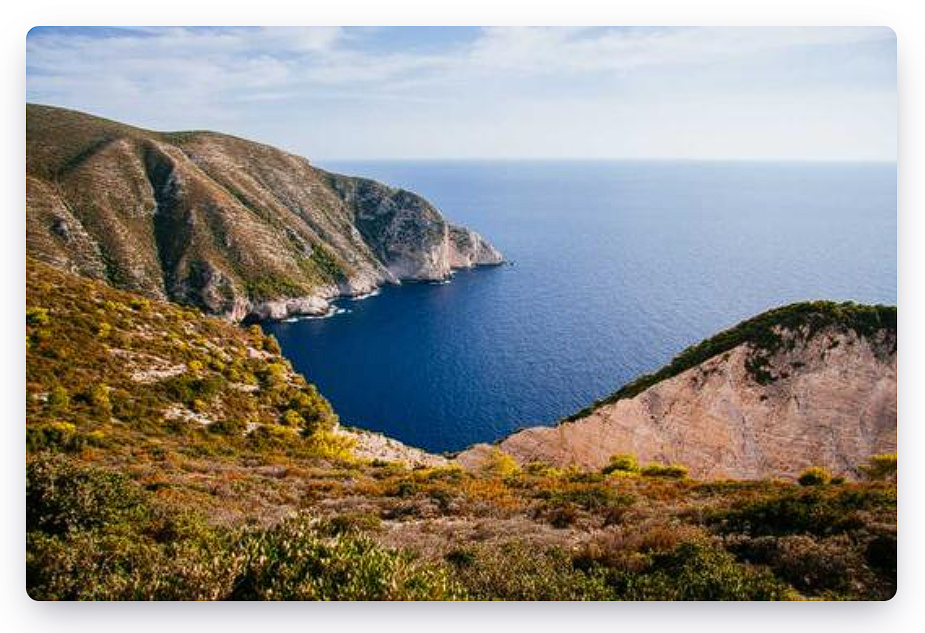

My first web page
I am a developer
***the best movies according to Hai Luong***
Finding Nemo
This is my favourite anime. I love the beautiful images.
Exterminator
Really cool sci-fi movie.
Forest Gum
Super beautiful film. Really artistic.

What to bring for lunch break
- Sandwich with peanut for energy
- An apple or banana
- Water or any of your favorite drink